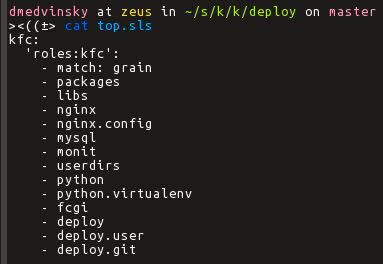

SaltStack
Dmitry Medvinsky
SaltStack
- Remote execution
- Server configuration manager
- With cloud in mind, but works in any setup
Why not Puppet, Chef?
- Python
- Jinja Templates (by default)
- YAML state files
- Minimalistic, clean codebase
Cons
- Pretty young
- Smaller community
- Less modules
Architecture
- salt-master
- salt-minion
Main terms
- Targeting
- Remote Execution
- Configuration Management
Minion targeting
- Hostname (Globs/RegEx)
- Grains (RegEx)
- Static groups
- Compound
Grains
Targeting
- os:CentOS
- cpuarch:x86_64
- side:light
Minion Config
grains:
roles:
- webserver
- memcache
deployment: datacenter4
side: dark
Static groups
Master Config
nodegroups:
grandmasters: 'L@Yoda,Luke'
knights: 'G@rank:JediKnight and *.dantooine.local'
Remote Execution
salt '*' test.ping
salt 'web[1-5]' nginx.signal reload
salt -E 'django-(prod|test)' django.collectstatic
salt -G 'os:MacOS' brew.install iterm2
salt -L 'job1,job2,job3' cron.set_job root \* \* \* \* 1 /usr/local/weekly'
80 modules at the moment of this presentation, grows fast, easy to add.
State Enforcement
SLS — Salt Stack
file_roots:
base:
- /srv/salt/
kfc:
- /home/dmedvinsky/src/kfc/kfc-server/deploy/
State Enforcement
Tree

State Enforcement
Top file
State File
libjpeg:
pkg:
- installed
- names:
- libjpeg8
- libjpeg8-dev
zlib:
pkg:
- installed
- names:
- zlib1g
- zlib1g-dev
file:
- symlink
- name: /usr/lib/libz.so
- target: /usr/lib/x86_64-linux-gnu/libz.so
State File
mysql-server:
pkg:
- installed
service:
- running
- name: mysql
- enable: True
kfc_database:
mysql_database:
- present
{% if 'kfc-prod' in grains['roles'] %}
- name: kfc_prod
{% else %}
- name: kfc_test
{% endif %}
- require:
- pkg: mysql-server
State File
# nginx/init.sls:
nginx:
pkg:
- installed
service:
- running
- enable: True
# nginx/config.sls:
include:
- nginx
extend:
nginx:
service:
- watch:
- file: conf
conf:
file:
- managed
- name: /etc/nginx/sites-available/kfc.conf
- source: salt://nginx/site.conf
- template: jinja
- context:
instance: prod
- require:
- pkg: nginx
State File
<Include Declaration>:
- <Module Reference>
- <Module Reference>
<Extend Declaration>:
<ID Declaration>:
[<overrides>]
<ID Declaration>:
<State Declaration>:
- <Function>:
- <Function Arg>
- <Function Arg>
- <Function Arg>
- <Name>: <name>
- <Requisite Declaration>:
- <Requisite Reference>
- <Requisite Reference>
<ID Declaration>:
<State Declaration>.<Function>:
- <Function Arg>
- <Function Arg>
- <Function Arg>
- <Names>:
- <name>
- <name>
- <name>
- <Requisite Declaration>:
- <Requisite Reference>
- <Requisite Reference>